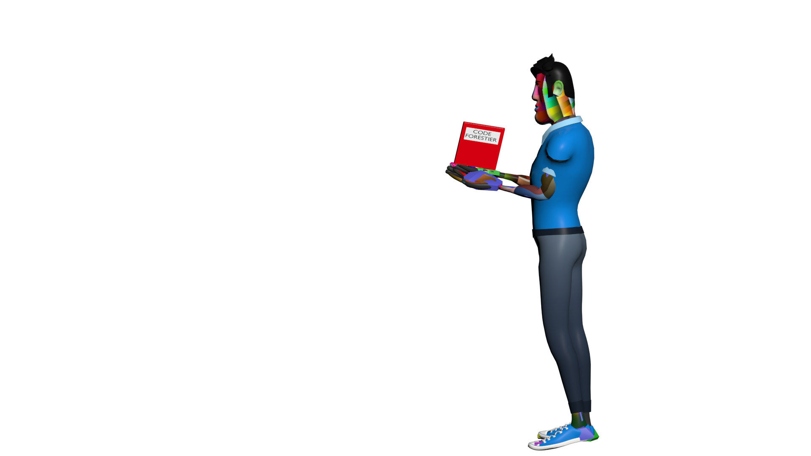
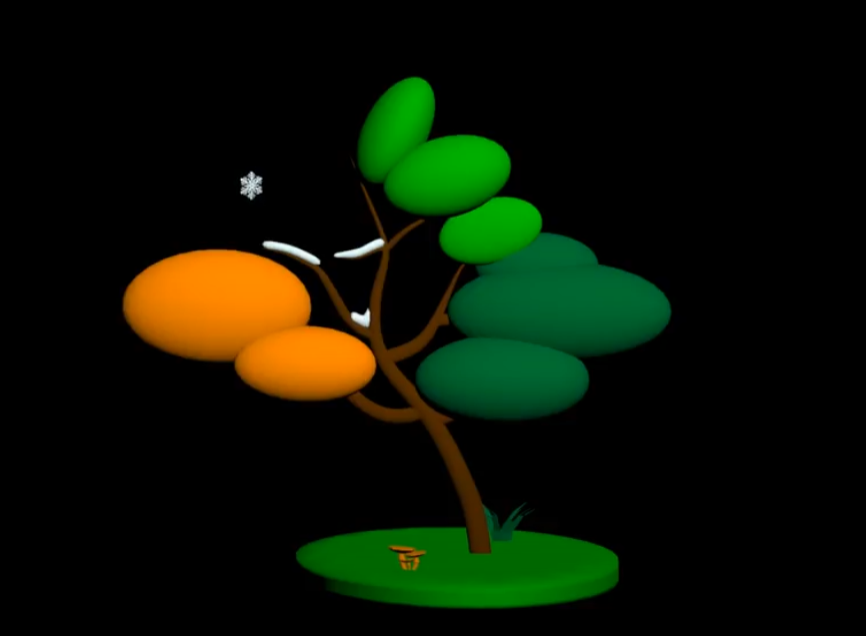
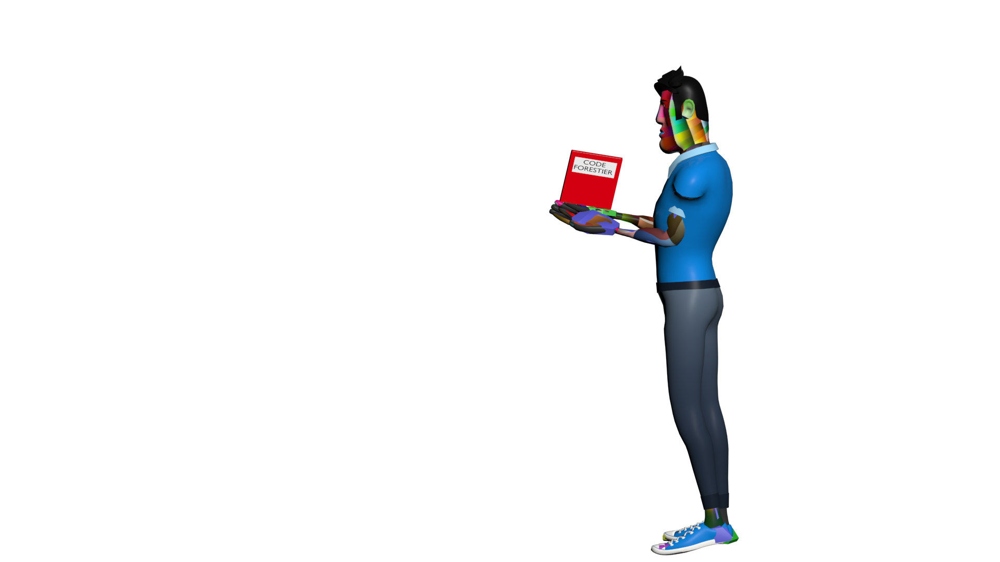
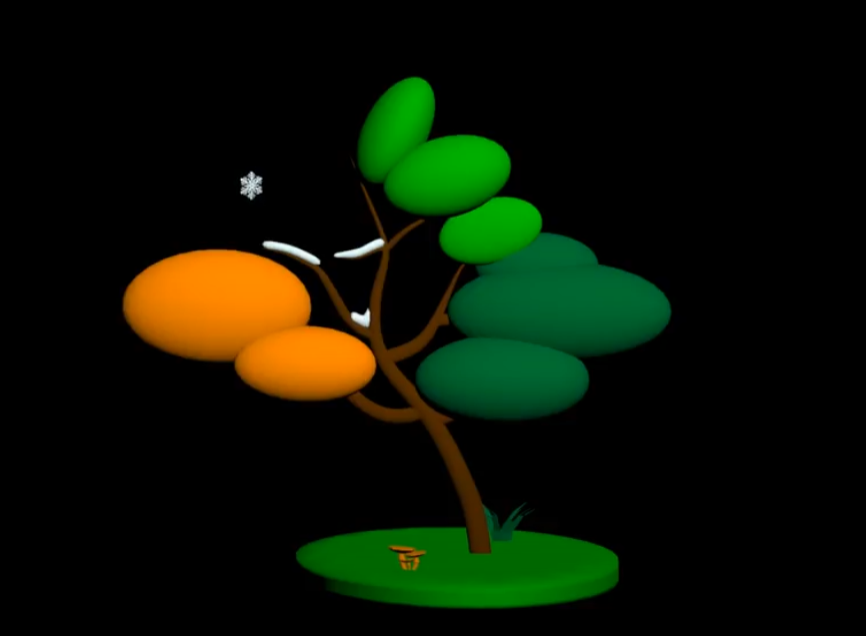

Animation 3D Fransylva

Lors de ma 2 ème année de BUT j'ai pu réalisé une animation 3D pour une association forestière, Fransylva.
Qu'est-ce que Fransylva ?
Fransylva est une association forestière qui recherche un support publicitaire pour faire valoir leurs actions et se faire connaître par le publique
Défi
Etant un groupe de quatre étudiants COMBRISSON Victor, RICARD--LISSARD Léo (moi), CHAUDIER Pierrick et VIGNE Lena avec assez peu de connaissances en modélisation et animation 3D, ce projet a pour nous été un réel défi avec un début difficile remplit d'apprentissage.
Nous avons donc commencé par le plus évident et indispensable : le script et le storyboard pour éviter de se perdre dans nos modélisations.
Storyboard et script
J'étais en charge de rédiger le script de la vidéo pour promouvoir au mieux l'animation tandis que Lena se chargait du storyboard qu'elle a réalisé en faisant des dessins pour mieux se projeter sur ce qu'on devait faire exactement. Après avoir fait le storyboard et le script nous avons pu commencé à réalisé les modélisations et animations.
Vous pouvez voir le storyboard en détail en cliquant ci-dessous
Modélisation et animation
Cette partie a été la plus délicate du projet, elle nous a demandé beaucoup de temps avant de pouvoir tout finir. Pour gagner un maximum de temps nous avons décidé de prendre des modélisations déjà faites et libres de droits. Nous avons pu grâce à ça nous concentrer sur la partie où l'on avait le moins de compétences, l'animation.
Voici quelques exemples de modélisation et d'animation que nous avons pu faire.
 



La motion capture
Pour utiliser la motion capture nous dû utiliser une combinaison Xsens qui est proposé par le logiciel Xsens. Ensuite il faut bien calibrer les capteurs installés sur la personne afin d'avoir aucun problème lors des mouvements de la personne.
Pourquoi utiliser la motion capture ?
Cela permet d'obtenir une animation plus réaliste et fluide car elle est basée sur les mouvements d'une personne réel. Cela peut-être un gain de temps lorsque l'on sait correctement utiliser les logiciels de modélisations.
Rendu Final
Il n'y a pour le moment pas de rendu final étant donné que la vidéo est toujours en cours de réalisation mais le portfolio sera mise à jour dès que la vidéo sera fini